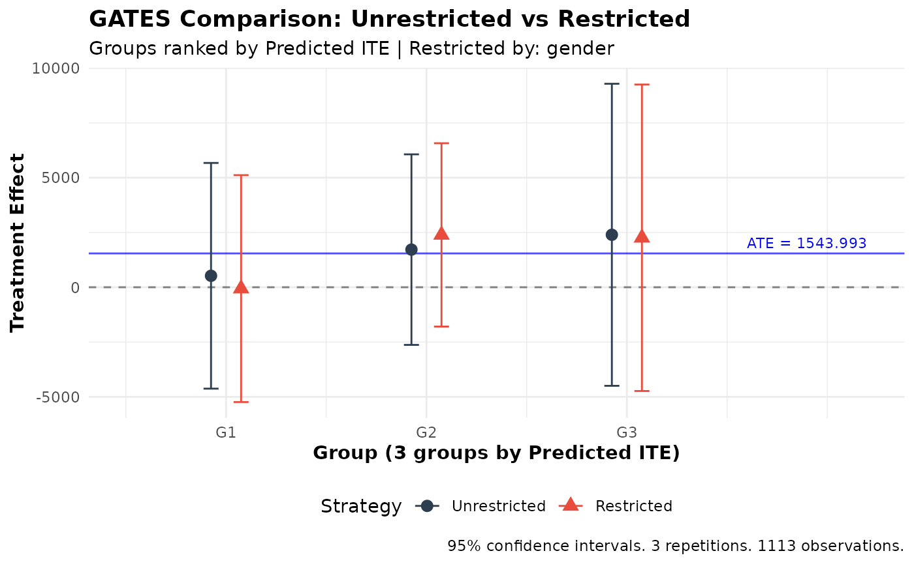

Compare GATES: Unrestricted vs Restricted Ranking
Source:R/compare_restricted.R
gates_restricted.RdCompares Group Average Treatment Effects (GATES) between an unrestricted strategy (ranking predictions across the full sample) and a restricted strategy (ranking predictions within groups defined by a restrict_by variable). Both strategies use the **same** ensemble fit — they differ only in how observations are ranked into groups.
This function implements the analysis from Fava (2025) to test whether ranking by predicted treatment effects within subgroups (e.g., income quintiles, education levels) yields different treatment effect estimates than global ranking.
Usage
gates_restricted(
ensemble_fit,
restrict_by,
n_groups = 3,
outcome = NULL,
treatment = NULL,
prop_score = NULL,
controls = NULL,
subset = NULL,
group_on = c("auto", "all", "analysis")
)Arguments
- ensemble_fit
An object of class
ensemble_hte_fitfromensemble_hte()orensemble_pred_fitfromensemble_pred().- restrict_by
The variable defining groups for restricted ranking:
Character string: column name in the
dataused when fitting the ensemble model. The variable must exist in that data at the time of fitting; columns added to the data.frame after fitting are not available.Numeric/factor vector: group indicator (must have same length as data)
- n_groups
Number of groups to divide the sample into (default: 3)
- outcome
Either:
NULL (default): uses the same outcome as in the ensemble function
Character string: column name in the
dataused in the ensemble functionNumeric vector: custom outcome variable (must have appropriate length)
- treatment
For
ensemble_pred_fitonly. The treatment variable:Character string: column name in the
dataused inensemble_pred()Numeric vector: binary treatment variable (must have same length as data)
Ignored for
ensemble_hte_fit(uses the treatment from the fit).- prop_score
For
ensemble_pred_fitonly. Propensity score:NULL (default): estimated as mean of treatment variable
Character string: column name in the
dataused in the ensemble functionNumeric value: constant propensity score for all observations
Numeric vector: observation-specific propensity scores
For
ensemble_hte_fit, uses the propensity score from the fit.- controls
Optional character vector of control variable names from
datato include as covariates in the GATES regression.- subset
Which observations to use for the GATES comparison. Options:
NULL (default): uses all observations (or training obs for
ensemble_pred_fitwhen using the default outcome with subset training)"train": uses only training observations (forensemble_pred_fitonly)"all": explicitly uses all observationsLogical vector: TRUE/FALSE for each observation (must have same length as data)
Integer vector: indices of observations to include (1-indexed)
This allows evaluating GATES comparison on a subset of observations.
- group_on
Character controlling which observations define the quantile cutoffs used to form groups. One of
"auto"(default),"all", or"analysis". Seegatesfor details.
Value
An object of class gates_restricted_results containing:
unrestricted:
gates_resultsobject for unrestricted strategyrestricted:
gates_resultsobject for restricted strategydifference: data.table with the difference (unrestricted - restricted) for each group, with properly computed standard errors
top_bottom_diff: data.table with difference in top-bottom estimates
all_diff: data.table with difference in weighted average (all) estimates
top_all_diff: data.table with difference in top-all estimates
strata_var: name of the stratification variable
strata_levels: unique levels of the stratification variable
n_groups: number of groups used
outcome: the outcome variable used
targeted_outcome: the outcome used for prediction
fit_type: "hte" or "pred" depending on input
n_used: number of observations used
M: number of repetitions
call: the function call
Estimation Procedure
For each repetition \(m = 1, \ldots, M\), two GATES regressions are run on the same data using the same ensemble predictions from repetition \(m\):
Unrestricted: groups are formed by ranking predictions within each fold (as in
gates).Restricted: groups are formed by ranking predictions within each fold and within each level of the
restrict_byvariable.
The difference between unrestricted and restricted estimates is computed for each repetition, with standard errors accounting for the cross-covariance between the two regressions (since they share the same data). The final reported estimates and standard errors are the simple averages across all \(M\) repetitions.
References
Fava, B. (2025). Training and Testing with Multiple Splits: A Central Limit Theorem for Split-Sample Estimators. arXiv preprint arXiv:2511.04957.
Examples
# \donttest{
data(microcredit)
covars <- c("age", "gender", "education", "hhinc_yrly_base",
"css_creditscorefinal")
dat <- microcredit[, c("hhinc_yrly_end", "treat", covars)]
fit <- ensemble_hte(
hhinc_yrly_end ~ ., treatment = treat, data = dat,
prop_score = microcredit$prop_score,
algorithms = c("lm", "grf"), M = 3, K = 3
)
#> Warning: Some propensity scores are below 0.20 or above 0.80. This package is designed for randomized controlled trials (RCTs), where propensity scores are typically well-balanced. Extreme propensity scores may indicate an observational study or a heavily unbalanced design. Please verify your experimental design.
# Compare unrestricted vs restricted ranking by gender
comparison <- gates_restricted(fit, restrict_by = "gender", n_groups = 3)
print(comparison)
#>
#> GATES Comparison: Unrestricted vs Restricted Ranking
#> =====================================================
#>
#> Fit type: HTE (ensemble_hte)
#>
#> Strategy comparison:
#> - Unrestricted: Rank predictions across full sample
#> - Restricted: Rank predictions within groups ('gender')
#> - Restrict_by levels: 0, 1
#>
#> Groups (3) defined by: predicted ITE
#> Outcome: hhinc_yrly_end
#> Observations: 1113
#> Repetitions: 3
#>
#> Unrestricted GATES Estimates:
#> ----------------------------------------
#> Group Estimate SE t p-value
#> 1 522.43 2626.85 0.20 0.842
#> 2 1716.68 2217.72 0.77 0.439
#> 3 2392.87 3515.24 0.68 0.496
#>
#> Top-Bottom: 1870.44 (SE: 4620.71, p = 0.686)
#> All: 1543.53 (SE: 1711.43, p = 0.367)
#> Top-All: 849.34 (SE: 2673.83, p = 0.751)
#>
#> Restricted GATES Estimates:
#> ----------------------------------------
#> Group Estimate SE t p-value
#> 1 -61.63 2640.84 -0.02 0.981
#> 2 2387.92 2133.82 1.12 0.263
#> 3 2256.80 3567.11 0.63 0.527
#>
#> Top-Bottom: 2318.43 (SE: 4687.05, p = 0.621)
#> All: 1523.29 (SE: 1720.53, p = 0.376)
#> Top-All: 733.51 (SE: 2708.05, p = 0.786)
#>
#> Difference (Unrestricted - Restricted):
#> ----------------------------------------
#> Group Estimate SE t p-value
#> 1 584.06 558.41 1.05 0.296
#> 2 -671.24 1017.42 -0.66 0.509
#> 3 136.07 783.70 0.17 0.862
#>
#> Top-Bottom Diff: -447.99 (SE: 997.71, p = 0.653)
#> All Diff: 20.23 (SE: 100.15, p = 0.840)
#> Top-All Diff: 115.84 (SE: 797.86, p = 0.885)
#>
#> ---
#> Signif. codes: 0 '***' 0.001 '**' 0.01 '*' 0.05 '.' 0.1 ' ' 1
plot(comparison)

# }